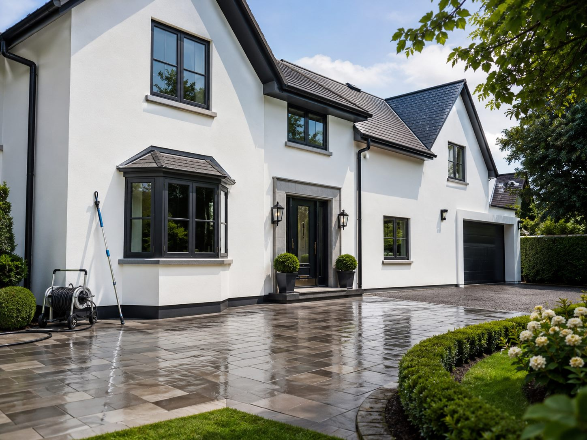
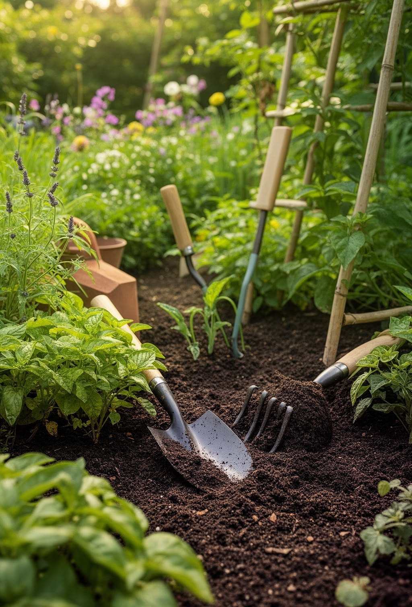
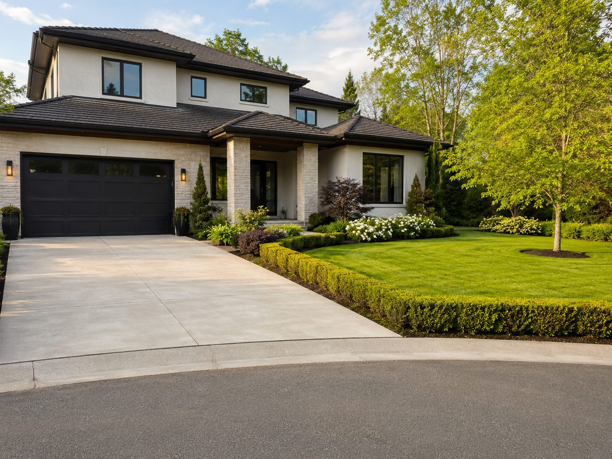
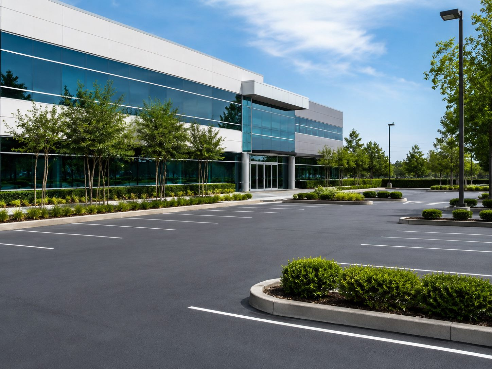
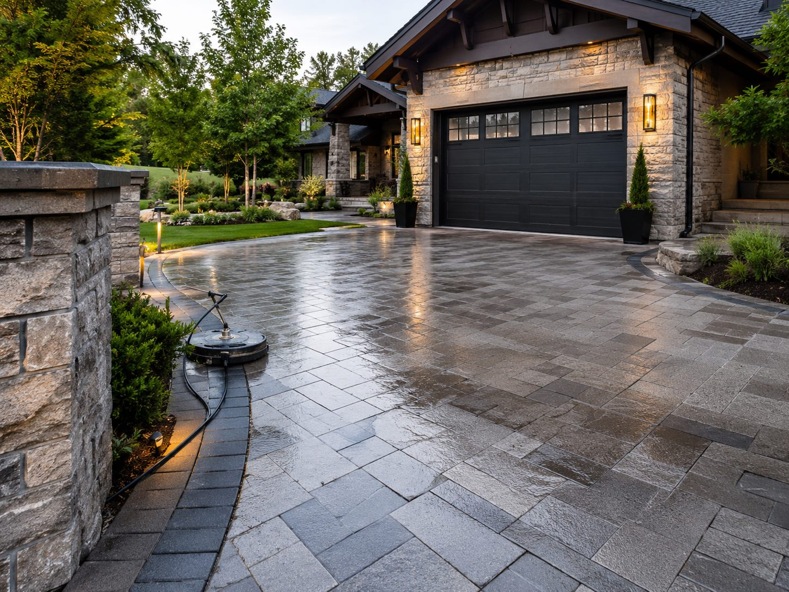

Potrzebujesz kilku usług naraz?
Połącz je w jednym zleceniu — przygotujemy wspólną wycenę dla całej posesji.
Poproś o wycenę →Elewacje, ogrody, wywóz odpadów, mycie kostki, sprzątanie parkingów i prace porządkowe — jedna ekipa, wiele usług, profesjonalny efekt.
Mycie elewacji, kostki brukowej i podjazdów — czysty, odświeżony efekt.
Zobacz usługi →Sprzątanie parkingów, placów i terenów firmowych — jednorazowo lub stale.
Zobacz usługi →K&K Wokół Domu to firma zajmująca się kompleksową obsługą terenów zewnętrznych. Pomagamy właścicielom domów, ogrodów i firm zadbać o czystość, estetykę oraz funkcjonalność przestrzeni wokół budynku.
Wykonujemy prace ogrodowe, czyszczenie elewacji, mycie kostki, zakładanie rabat, wywóz odpadów oraz sprzątanie parkingów i terenów firmowych. Stawiamy na dokładność, terminowość i uczciwe podejście — tak, aby klient nie musiał szukać kilku różnych ekip do różnych zadań.
Działamy na terenie powiatu grodziskiego i okolic — u właścicieli domów, w ogrodach oraz przy obiektach firmowych.
Poproś o wycenę →Dom, ogród i teren firmy — wszystko zlecasz jednej, sprawdzonej ekipie.
Pracujemy precyzyjnie i zostawiamy po sobie porządek na każdym etapie.
Uczciwa, przejrzysta wycena dopasowana do zakresu i miejsca prac.
Szybki kontakt, sprawna realizacja i możliwość stałej opieki nad terenem.
Od elewacji, przez ogród i kostkę, aż po wywóz odpadów i sprzątanie terenu. Siedem usług, które możesz łączyć w jednym zleceniu.

01Profesjonalne czyszczenie elewacji z zabrudzeń, kurzu, zielonego nalotu, glonów i osadów. Odświeżamy wygląd budynku i poprawiamy estetykę całej posesji.
Zobacz szczegóły →
02Koszenie trawy, porządkowanie ogrodu, przycinanie, grabienie, usuwanie chwastów i bieżąca pielęgnacja zieleni. Ogród schludny, czysty i estetyczny.
Zobacz szczegóły →
03Rabaty ozdobne, układanie agrowłókniny, wysypywanie kamienia lub kory, sadzenie roślin i przygotowanie estetycznych stref zieleni wokół domu.
Zobacz szczegóły → 04
04Wywóz gałęzi, zielonych odpadów, starych elementów ogrodowych, gruzu i śmieci. Szybko porządkujemy teren po remoncie, sprzątaniu lub pracach w ogrodzie.
Zobacz szczegóły →
05Zamiatanie, zbieranie odpadów, usuwanie liści i porządkowanie parkingów, placów, chodników oraz terenów zewnętrznych przy firmach.
Zobacz szczegóły →
06Czyszczenie kostki, podjazdów, chodników i nawierzchni z zabrudzeń, mchu, nalotów i osadów. Przywracamy czysty, zadbany wygląd nawierzchni.
Zobacz szczegóły → 07
07Dla osób, które chcą szybko ogarnąć zaniedbany teren: usuwanie odpadów, czyszczenie, grabienie, przycinanie, koszenie i przygotowanie do sezonu.
Zobacz szczegóły →Połącz je w jednym zleceniu — przygotujemy wspólną wycenę dla całej posesji.
Poproś o wycenę →
Zajmujemy się całością — Ty widzisz gotowy, czysty i uporządkowany teren.
 Dojazd i realizacja
Dojazd i realizacja
Piszesz lub dzwonisz — przez telefon, formularz albo wiadomość.
Ustalamy zakres prac i podstawowe informacje o zleceniu.
Przygotowujemy wycenę — na podstawie zdjęć lub po obejrzeniu miejsca.
Umawiamy dogodny dla Ciebie termin realizacji.
Wykonujemy usługę dokładnie i zostawiamy po sobie porządek.
Otrzymujesz gotowy, czysty i zadbany teren.
Orientacyjne przedziały cen dla najczęstszych zleceń. Ostateczną wycenę ustalamy indywidualnie — zależnie od zakresu, wielkości i stanu terenu.
Usuwanie kurzu, glonów, zielonego nalotu i osadów z elewacji budynku oraz impregnacja.
Koszenie, przycinanie, grabienie, usuwanie chwastów i pielęgnacja zieleni.
Agrowłóknina, kamień lub kora, sadzenie roślin i estetyczne strefy zieleni.
Gałęzie, zielone odpady, gruz i śmieci — od załadunku po wywóz.
Zamiatanie, zbieranie odpadów i porządkowanie terenów zewnętrznych przy firmach.
Czyszczenie kostki, podjazdów i chodników z mchu i osadów oraz impregnacja.
Sprzątanie terenu, grabienie, wywóz odpadów, czyszczenie nawierzchni i uporządkowanie przestrzeni wokół domu.
Ceny orientacyjne. Podane widełki mają charakter poglądowy — dokładną, bezpłatną wycenę przygotujemy po zapoznaniu się z zakresem prac i terenem. Napisz lub zadzwoń, a wspólnie ustalimy szczegóły.
Regularne lub jednorazowe sprzątanie parkingów, placów, chodników i terenów zewnętrznych przy firmach. Dbamy o estetykę otoczenia obiektów, bo czysty teren przed budynkiem wpływa na wrażenie klientów, pracowników i kontrahentów.
Realizujemy zarówno jednorazowe zlecenia, jak i regularną obsługę terenów zewnętrznych — dla osób prywatnych i klientów biznesowych.
Domy jednorodzinne z ogrodem, podjazdem, kostką lub elewacją do odświeżenia.
Parkingi, place i tereny zewnętrzne wymagające regularnej obsługi i porządku.
Małe osiedla, magazyny, biura i obiekty firmowe — teren zawsze zadbany.

Napisz do nas, opisz zakres prac i prześlij zdjęcia terenu. Przygotujemy wycenę i zaproponujemy najlepsze rozwiązanie dla Twojego domu, ogrodu lub firmy.
Przygotujemy indywidualną wycenę dopasowaną do Twojej posesji, ogrodu lub terenu firmowego.